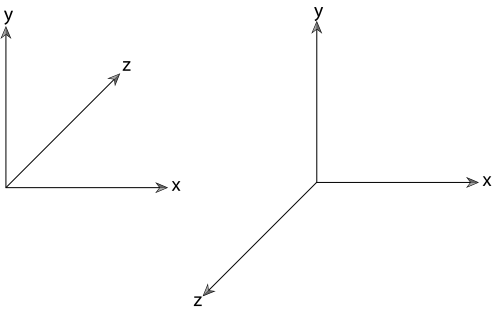

Sections
Coordinate Systems
In the general $ n $-dimensional case, an origin $ p_o $ and its $ n $ linearly independent basis vectors define an $ n $-dimensional affine space. all vectors $ v $ in the space can be expressed as a linear combination of the basis vector:
Where $ v_i $ stands for $ i $th basis vector and $ s_i $ stands for $ i $th scalar value.
Any point in the space can then be presented as:
For 3 dimensional case in pbrt, we let origin $ p_o = (0, 0, 0) $ and the 3 basis vectors $ v_x = (1, 0, 0) $, $ v_y = (0, 1, 0) $, and $ v_z = (0, 0, 1) $.
For 3D coordinate system, there are two common arranges called left-handed system and right-handed system:
The pbrt system uses left-handed coordinate system shown at left side of the figure.
Vectors
pbrt provides both 2D and 3D vector classes. Here we only show implementation of Vector3D, because Vector3D and Vector2D have similar implementations.
<Vector Declarations> ≡
template class Vector2 {
public:
<Vector2 Public Methods>
<Vector2 Public Data>
};
template class Vector3 {
public:
<Vector3 Public Methods>
<Vector3 Public Data>
};
For convenience, both index and class memeber methods are provided to access the data in vector:
<Vector2 Public Data> ≡
T x, y;
<Vector3 Public Data> ≡
T x, y, z;
<Vector3 Public Methods> ≡
T operator[](int i) const {
Assert(i >= 0 && i <= 2);
if (i == 0) return x;
if (i == 1) return y;
return z;
}
T &operator[](int i) {
Assert(i >= 0 && i <= 2);
if (i == 0) return x;
if (i == 1) return y;
return z;
}
<Vector Declarations> +≡
typedef Vector2<Float> Vector2f;
typedef Vector2<int> Vector2i;
typedef Vector3<Float> Vector3f;
typedef Vector3<int> Vector3i;
The data members are usually only acessible inside the class. But due to frequent use of data members in Vector3D and Vector2D, also to provide a better readability, it is not recommended to hide its data members.
Detect NaN
It is important to detect a bug in the system as soon as possible, so we add NaN assertion in the constructor:
<Vector3 Public Methods> +≡
Vector3() { x = y = z = 0; }
Vector3(T x, T y, T z)
: x(x), y(y), z(z) {
Assert(!HasNaNs());
}
bool HasNaNs() const {
return std::isnan(x) || std::isnan(y) || std::isnan(z);
}
Addition, substraction, scalar multiplication and scalar division
<Vector3 Public Methods> +≡
Vector3<T> operator+(const Vector3<T> &v) const {
return Vector3(x + v.x, y + v.y, z + v.z);
}
Vector3<T>& operator+=(const Vector3<T> &v) {
x += v.x; y += v.y; z += v.z;
return *this;
}
Vector3<T> operator*(T s) const { return Vector3<T>(s*x, s*y, s*z); }
Vector3<T> &operator*=(T s) {
x *= s; y *= s; z *= s;
return *this;
}
Vector3<T> operator/(T f) const {
Assert(f != 0);
Float inv = (Float)1 / f;
return Vector3<T>(x * inv, y * inv, z * inv);
}
Vector3<T> &operator/=(T f) {
Assert(f != 0);
Float inv = (Float)1 / f;
x *= inv; y *= inv; z *= inv;
return *this;
}
Vector3<T> operator-() const { return Vector3<T>(-x, -y, -z); }
<Geometry Inline Functions>=
template <typename T> inline Vector3<T>
operator*(T s, const Vector3<T> &v) { return v * s; }
template <typename T> Vector3<T> Abs(const Vector3<T> &v) {
return Vector3<T>(std::abs(v.x), std::abs(v.y), std::abs(v.z));
}
Dot and cross product
Dot product formula:
<Geometry Inline Functions> +≡
template <typename T> inline T
Dot(const Vector3<T> &v1, const Vector3<T> &v2) {
return v1.x * v2.x + v1.y * v2.y + v1.z * v2.z;
}
template <typename T>
inline T AbsDot(const Vector3<T> &v1, const Vector3<T> &v2) {
return std::abs(Dot(v1, v2));
}
Cross product formula:
Normalization
<Vector3 Public Methods> +≡
Float LengthSquared() const { return x * x + y * y + z * z; }
Float Length() const { return std::sqrt(LengthSquared()); }
<Geometry Inline Functions> +≡
template <typename T> inline Vector3<T>
Normalize(const Vector3<T> &v) { return v / v.Length(); }
Miscellaneous operations
<Geometry Inline Functions> +≡
template <typename T> T
MinComponent(const Vector3<T> &v) {
return std::min(v.x, std::min(v.y, v.z));
}
template <typename T> T
MaxComponent(const Vector3<T> &v) {
return std::max(v.x, std::max(v.y, v.z));
}
template <typename T> int
MaxDimension(const Vector3<T> &v) {
return (v.x > v.y) ? ((v.x > v.z) ? 0 : 2) :
((v.y > v.z) ? 1 : 2);
}
template <typename T> Vector3<T>
Min(const Vector3<T> &p1, const Vector3<T> &p2) {
return Vector3<T>(std::min(p1.x, p2.x), std::min(p1.y, p2.y),
std::min(p1.z, p2.z));
}
template <typename T> Vector3<T>
Max(const Vector3<T> &p1, const Vector3<T> &p2) {
return Vector3<T>(std::max(p1.x, p2.x), std::max(p1.y, p2.y),
std::max(p1.z, p2.z));
}
template <typename T> Vector3<T>
Permute(const Vector3<T> &v, int x, int y, int z) {
return Vector3<T>(v[x], v[y], v[z]);
}
Coordinate system from a vector
Given a vector, we can create a local coordinate system by zeroing one of the componens in the original vector, swapping the remaining two, negating one of them. Then we cross product the original vector with this vector to get the third perpendicular vector.
<Geometry Inline Functions> +≡
template <typename T> inline void
CoordinateSystem(const Vector3<T> &v1, Vector3<T> *v2, Vector3<T> *v3) {
if (std::abs(v1.x) > std::abs(v1.y))
*v2 = Vector3<T>(-v1.z, 0, v1.x) /
std::sqrt(v1.x * v1.x + v1.z * v1.z);
else
*v2 = Vector3<T>(0, v1.z, -v1.y) /
std::sqrt(v1.y * v1.y + v1.z * v1.z);
*v3 = Cross(v1, *v2);
}
Points
A point is a zero-dimensional location in 2D or 3D space. Although it looks similar like Vector, it represent a position whereas Vector represent a direction.
Some similar part of implementation will be listed below:
<Point Declarations> ≡
template <typename T> class Point2 {
public:
<Point2 Public Methods>
<Point2 Public Data>
};
template <typename T> class Point3 {
public:
<Point3 Public Methods>
<Point3 Public Data>
};
<Point Declarations> +≡
typedef Point2<Float> Point2f;
typedef Point2<int> Point2i;
typedef Point3<Float> Point3f;
typedef Point3<int> Point3i;
<Point2 Public Data> ≡
T x, y;
<Point3 Public Data> ≡
T x, y, z;
<Point3 Public Methods> ≡
Point3() { x = y = z = 0; }
Point3(T x, T y, T z) : x(x), y(y), z(z) {
Assert(!HasNaNs());
}
<Geometry Inline Functions> +≡
template <typename T> Point3<T>
Min(const Point3<T> &p1, const Point3<T> &p2) {
return Point3<T>(std::min(p1.x, p2.x), std::min(p1.y, p2.y),
std::min(p1.z, p2.z));
}
template <typename T> Point3<T>
Max(const Point3<T> &p1, const Point3<T> &p2) {
return Point3<T>(std::max(p1.x, p2.x), std::max(p1.y, p2.y),
std::max(p1.z, p2.z));
}
<Geometry Inline Functions> +≡
template Point3 Abs(const Point3 &p) {
return Point3(std::abs(p.x), std::abs(p.y), std::abs(p.z));
}
<Geometry Inline Functions> +≡
template <typename T> Point3<T>
Permute(const Point3<T> &p, int x, int y, int z) {
return Point3<T>(p[x], p[y], p[z]);
}
When a vector is added to a point, it obatin a new point.
<Point3 Public Methods> +≡
Point3<T> operator+(const Vector3<T> &v) const {
return Point3<T>(x + v.x, y + v.y, z + v.z);
}
Point3<T> &operator+=(const Vector3<T> &v) {
x += v.x; y += v.y; z += v.z;
return *this;
}
Same for the subtraction, only that subtracting two points obtain a vector
The distance between two points can be computed by subtracting two points, and calculate the length of the resulting vector.
<Geometry Inline Functions> +≡
template <typename T> inline Float
Distance(const Point3<T> &p1, const Point3<T> &p2) {
return (p1 - p2).Length();
}
template <typename T> inline Float
DistanceSquared(const Point3<T> &p1, const Point3<T> &p2) {
return (p1 - p2).LengthSquared();
}
Some other useful functions are Lerp()(linear interpolation), Floor() and Ceil().
<Geometry Inline Functions> +≡
template <typename T> Point3<T>
Lerp(Float t, const Point3<T> &p0, const Point3<T> &p1) {
return (1 - t) * p0 + t * p1;
}
template <typename T> Point3<T> Floor(const Point3<T> &p) {
return Point3<T>(std::floor(p.x), std::floor(p.y), std::floor(p.z));
}
template <typename T> Point3<T> Ceil(const Point3<T> &p) {
return Point3<T>(std::ceil(p.x), std::ceil(p.y), std::ceil(p.z));
}
Normals
Normal is a vector that is perpendicular to a surface at a particular position. Altough normals are superficially cimilar to vectors, it differs by its definition according to their relationship to a particular surface and behave differently when applying transformation.
<Normal Declarations> ≡
template <typename T> class Normal3 {
public:
<<Normal3 Public Methods>>
<<Normal3 Public Data>>
};
typedef Normal3<Float> Normal3f;
One new operation to implement is flipping the surface normal such that it lies in the same hemisphere as a given vector. The rest of the operations simply follows from the vector.
<Geometry Inline Functions> +≡
template <typename T> inline Normal3<T>
Faceforward(const Normal3<T> &n, const Vector3<T> &v) {
return (Dot(n, v) < 0.f) ? -n : n;
}
Rays

A ray is a semi-infinite line specified by its origin $ o $ and direction $ d $.
<Ray Declarations> ≡
class Ray {
public:
<Ray Public Methods>
<Ray Public Data>
};
<Ray Public Data> ≡
Point3f o;
Vector3f d;
Parametric form of a ray:
The ray also includes a member variable tMax that limits the ray to a segment $ [o, r(t_{max})) $ along its infinite extent:
<Ray Public Data> +≡
mutable Float tMax;
Each ray also has a time value:
<Ray Public Data> +≡
Float time;
Finally, each ray records the medium containing its origin.
<Ray Public Data> +≡
const Medium *medium;
Constructor for rays:
<Ray Public Methods> +≡
Ray() : tMax(Infinity), time(0.f), medium(nullptr) { }
Ray(const Point3f &o, const Vector3f &d, Float tMax = Infinity,
Float time = 0.f, const Medium *medium = nullptr)
: o(o), d(d), tMax(tMax), time(time), medium(medium) { }
To find out the position of ray after time t, we uses the operator overloading below:
<Ray Public Methods> +≡
Point3f operator()(Float t) const { return o + d * t; }
Ray differentials
For antialiasing with the texture functions, it is helpful for pbrt to keep track of some additional information with rays. RayDifferential contains additional information about two neighboring rays in x and y direction.
<Ray Declarations> +≡
class RayDifferential : public Ray {
public:
<RayDifferential Public Methods>
<RayDifferential Public Data>
};
<RayDifferential Public Methods> ≡
RayDifferential() { hasDifferentials = false; }
RayDifferential(const Point3f &o, const Vector3f &d,
Float tMax = Infinity, Float time = 0.f,
const Medium *medium = nullptr)
: Ray(o, d, tMax, time, medium) {
hasDifferentials = false;
}
RayDifferential(const Ray &ray) : Ray(ray) {
hasDifferentials = false;
}
<RayDifferential Public Data> ≡
bool hasDifferentials;
Point3f rxOrigin, ryOrigin;
Vector3f rxDirection, ryDirection;
Camera implementations in pbrt compute differentials for rays leaving the camera under the assumption that camera rays are spaced one pixel apart. Integrators such as the SamplerIntegrator can generate multiple camera rays per pixel, in which case the actual distance between samples is lower. The ScaleDifferentials() method defined below update differential rays for an estimated sample spacing of s.
<RayDifferential Public Methods> +≡
void ScaleDifferentials(Float s) {
rxOrigin = o + (rxOrigin - o) * s;
ryOrigin = o + (ryOrigin - o) * s;
rxDirection = d + (rxDirection - d) * s;
ryDirection = d + (ryDirection - d) * s;
}
3D Bounding Box
The bounding volume hierarchy uses 3D boxes to bound geometric primitives in the scene.
<Bounds Declarations> ≡
template <typename T> class Bounds2 {
public:
<Bounds2 Public Methods>
<Bounds2 Public Data>
};
template <typename T> class Bounds3 {
public:
<Bounds3 Public Methods>
<Bounds3 Public Data>
};
typedef Bounds2<Float> Bounds2f;
typedef Bounds2<int> Bounds2i;
typedef Bounds3<Float> Bounds3f;
typedef Bounds3<int> Bounds3i;
pbrt uses axis-aligned bounding box, where the box edges are aligned with the coordinate system axes. The bounding box can be repesented with one of its vertices and three length, each represnting the distance spanned along $ x $, $ y $ and $ z $ direction.

The constructor for bounding box is shown below:
<Bounds3 Public Data> ≡
Point3<T> pMin, pMax;
<Bounds3 Public Methods> ≡
Bounds3() {
T minNum = std::numeric_limits<T>::lowest();
T maxNum = std::numeric_limits<T>::max();
pMin = Point3<T>(maxNum, maxNum, maxNum);
pMax = Point3<T>(minNum, minNum, minNum);
}
Bounds3(const Point3<T> &p) : pMin(p), pMax(p) { }
Bounds3(const Point3<T> &p1, const Point3<T> &p2)
: pMin(std::min(p1.x, p2.x), std::min(p1.y, p2.y),
std::min(p1.z, p2.z)),
pMax(std::max(p1.x, p2.x), std::max(p1.y, p2.y),
std::max(p1.z, p2.z)) {
}
Sometimes it is useful to use array indexing to select the two points at the corners of the box.
<Bounds3 Public Methods> +≡
const Point3<T> &operator[](int i) const;
Point3<T> &operator[](int i);
Corner() method returns one of the eight coordinates of the bounding box.
<Bounds3 Public Methods> +≡
Point3<T> Corner(int corner) const {
return Point3<T>((*this)[(corner & 1)].x,
(*this)[(corner & 2) ? 1 : 0].y,
(*this)[(corner & 4) ? 1 : 0].z);
}
Union() method returns a new bounding box that encompasses that point as well as the original box. Or it returns a new bounding box that encompasses by two other bounding boxes.
<Geometry Inline Functions> +≡
template <typename T> Bounds3 <T>
Union(const Bounds3<T> &b, const Point3<T> &p) {
return Bounds3<T>(Point3<T>(std::min(b.pMin.x, p.x),
std::min(b.pMin.y, p.y),
std::min(b.pMin.z, p.z)),
Point3<T>(std::max(b.pMax.x, p.x),
std::max(b.pMax.y, p.y),
std::max(b.pMax.z, p.z)));
}
template <typename T> Bounds3<T>
Union(const Bounds3<T> &b1, const Bounds3<T> &b2) {
return Bounds3<T>(Point3<T>(std::min(b1.pMin.x, b2.pMin.x),
std::min(b1.pMin.y, b2.pMin.y),
std::min(b1.pMin.z, b2.pMin.z)),
Point3<T>(std::max(b1.pMax.x, b2.pMax.x),
std::max(b1.pMax.y, b2.pMax.y),
std::max(b1.pMax.z, b2.pMax.z)));
}
To find intersection of two bounding boxes:
<Geometry Inline Functions> +≡
template <typename T> Bounds3<T>
Intersect(const Bounds3<T> &b1, const Bounds3<T> &b2) {
return Bounds3<T>(Point3<T>(std::max(b1.pMin.x, b2.pMin.x),
std::max(b1.pMin.y, b2.pMin.y),
std::max(b1.pMin.z, b2.pMin.z)),
Point3<T>(std::min(b1.pMax.x, b2.pMax.x),
std::min(b1.pMax.y, b2.pMax.y),
std::min(b1.pMax.z, b2.pMax.z)));
}
To detect whether two bounding boxes overlap:
<Geometry Inline Functions> +≡
template <typename T>
bool Overlaps(const Bounds3<T> &b1, const Bounds3<T> &b2) {
bool x = (b1.pMax.x >= b2.pMin.x) && (b1.pMin.x <= b2.pMax.x);
bool y = (b1.pMax.y >= b2.pMin.y) && (b1.pMin.y <= b2.pMax.y);
bool z = (b1.pMax.z >= b2.pMin.z) && (b1.pMin.z <= b2.pMax.z);
return (x && y && z);
}
To check if a point is inside bounding box:
<Geometry Inline Functions> +≡
template <typename T>
bool InsideExclusive(const Point3<T> &p, const Bounds3<T> &b) {
return (p.x >= b.pMin.x && p.x < b.pMax.x &&
p.y >= b.pMin.y && p.y < b.pMax.y &&
p.z >= b.pMin.z && p.z < b.pMax.z);
}
Expand() function pads the bounding box by a constant distance.
<Geometry Inline Functions> +≡
template <typename T, typename U> inline Bounds3<T>
Expand(const Bounds3<T> &b, U delta) {
return Bounds3<T>(b.pMin - Vector3<T>(delta, delta, delta),
b.pMax + Vector3<T>(delta, delta, delta));
}
Diagonal() function returns the vector along the box diagonal from minimum point to maximum point.
<Bounds3 Public Methods> +≡
Vector3<T> Diagonal() const { return pMax - pMin; }
Calculate surface area and volume of bounding box:
<Bounds3 Public Methods> +≡
T SurfaceArea() const {
Vector3<T> d = Diagonal();
return 2 * (d.x * d.y + d.x * d.z + d.y * d.z);
}
T Volume() const {
Vector3<T> d = Diagonal();
return d.x * d.y * d.z;
}
Return the index of which the three axes is longest.
<Bounds3 Public Methods> +≡
int MaximumExtent() const {
Vector3<T> d = Diagonal();
if (d.x > d.y && d.x > d.z)
return 0;
else if (d.y > d.z)
return 1;
else
return 2;
}
Linear interpolation:
<Bounds3 Public Methods> +≡
Point3<T> Lerp(const Point3f &t) const {
return Point3<T>(::Lerp(t.x, pMin.x, pMax.x),
::Lerp(t.y, pMin.y, pMax.y),
::Lerp(t.z, pMin.z, pMax.z));
}
Returns the continuous position of a point relative to the corners of the box, where a point at the minimum corner has offset $ (0, 0, 0) $, a point at the maximum corner has offset $ (1, 1, 1) $, and so forth.
<Bounds3 Public Methods> +≡
Vector3<T> Offset(const Point3<T> &p) const {
Vector3<T> o = p - pMin;
if (pMax.x > pMin.x) o.x /= pMax.x - pMin.x;
if (pMax.y > pMin.y) o.y /= pMax.y - pMin.y;
if (pMax.z > pMin.z) o.z /= pMax.z - pMin.z;
return o;
}
BoundingSphere() return the center and the radius of a sphere that bounds the bounding box.
<Bounds3 Public Methods> +≡
void BoundingSphere(Point3<T> *center, Float *radius) const {
*center = (pMin + pMax) / 2;
*radius = Inside(*center, *this) ? Distance(*center, pMax) : 0;
}